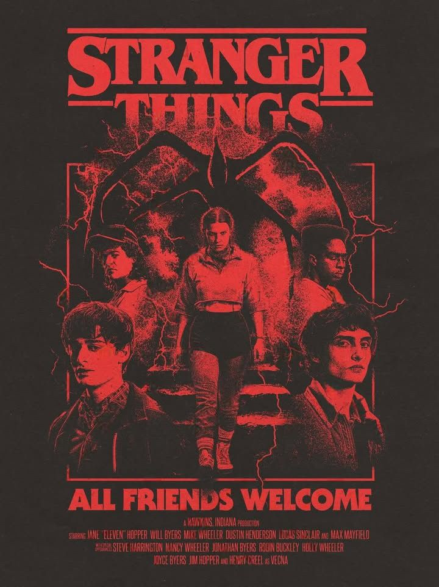

¿De qué trata la serie?
*Stranger Things* es una serie ambientada en los años 80 que combina ciencia ficción, terror y amistad. Todo comienza cuando un niño desaparece misteriosamente, y sus amigos descubren a una niña con poderes sobrenaturales que cambia sus vidas para siempre.
Personajes principales
Los protagonistas son *Eleven*, *Mike*, *Dustin*, *Lucas* y *Will*. Juntos enfrentan peligros del Mundo del Revés, criaturas extrañas y experimentos secretos.

Datos curiosos
- 📺 La serie fue creada por los hermanos Duffer.
- 🎸 La música está inspirada en los años 80.
- 👾 El Demogorgon es una de las criaturas más icónicas.